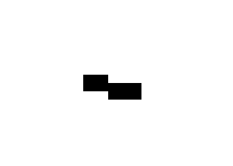
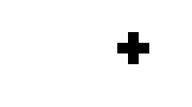
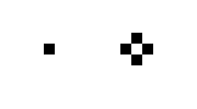

3. body 尺寸不再覆盖 wrapper 的方向
body 与 .page 均为 24×40；.page 声明 orientation="portrait-cw"。方向是传给面板打包器的元数据，普通 PNG 不直接旋转，因此这里检查编译结果。

由同一个 Go 程序调用真实渲染器生成，输入未变。图像以最近邻放大 12 倍；before 来自未修复的 bbddbfd，after 来自修复后的工作区。
线段 (10,10) → (17,11)，宽 2，butt 端点。绿色框标出原图像素 (13,9)：距线段约 0.99，应绘制为黑色。

左侧应有一个半径为 0 的黑点；右侧是半径 1、宽 1 的圆环，中心应为空白。


body 与 .page 均为 24×40；.page 声明 orientation="portrait-cw"。方向是传给面板打包器的元数据，普通 PNG 不直接旋转，因此这里检查编译结果。
原始观测值：before/result.json · after/result.json。全部为本地资源，可直接打开本文件查看。